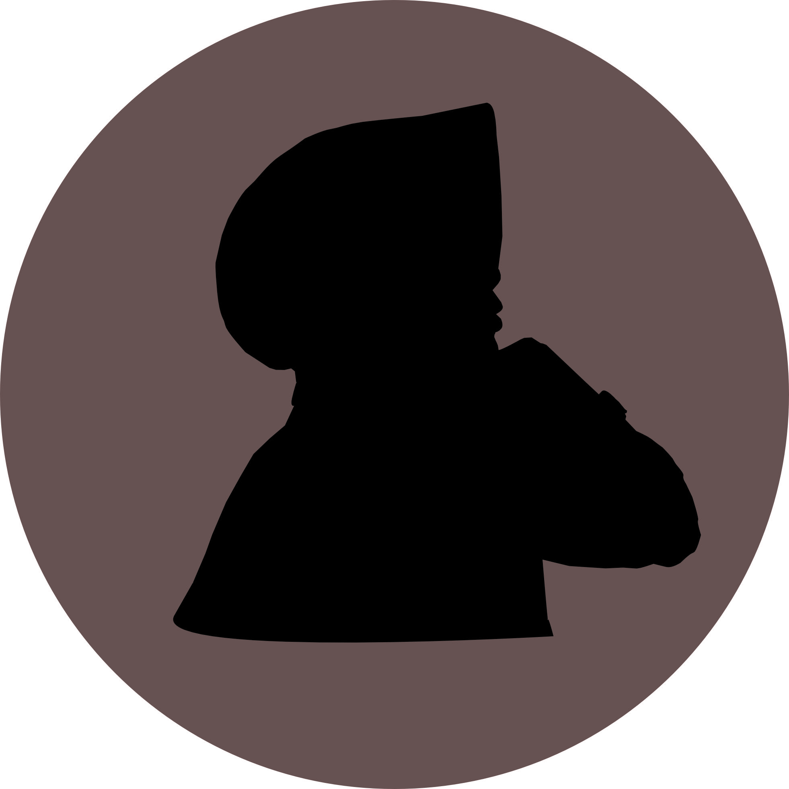
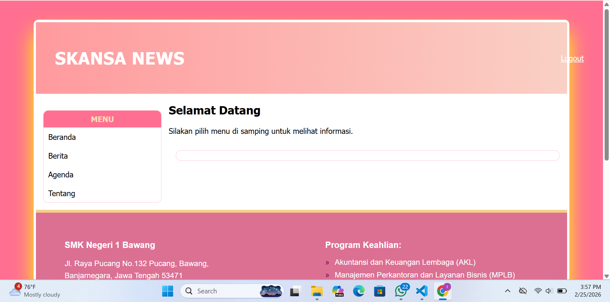
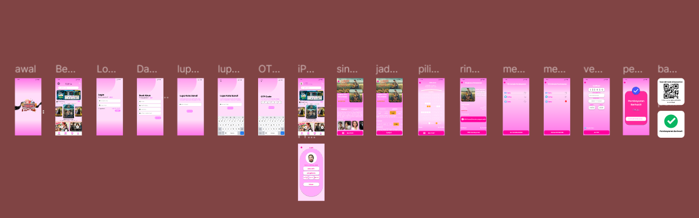
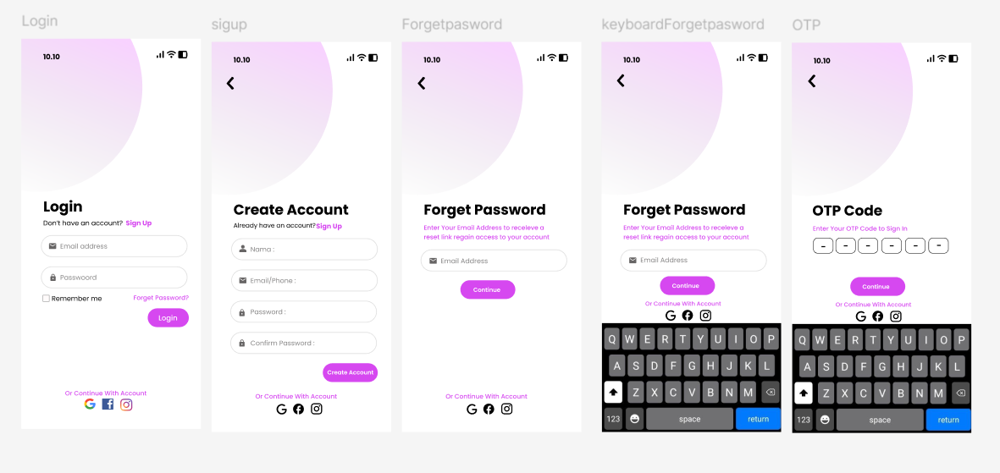

Tentang Saya
Saya merupakan siswa kelas X SMK Negeri 1 Bawang jurusan Pengembangan Perangkat Lunak dan Gim (PPLG) dengan konsentrasi Rekayasa Perangkat Lunak (RPL). Saya memiliki semangat belajar yang tinggi, disiplin, dan bertanggung jawab dalam menyelesaikan setiap tugas. Saya mampu bekerja secara mandiri maupun dalam tim, serta memiliki kemampuan komunikasi yang baik. Saya memiliki minat yang besar di bidang teknologi, khususnya dalam pengembangan perangkat lunak, dan terus berusaha mengembangkan keterampilan serta pengetahuan untuk mempersiapkan diri menghadapi dunia kerja di masa depan.
Pendidikan
-
SMK Negeri 1 Bawang
Saat ini saya masih berstatus sebagai pelajar aktif yang sedang menempuh pendidikan dan mengembangkan keterampilan sesuai bidang keahlian yang saya pilih yaitu Pengembangan Perangkat Lunak dan Gim dengan konsentrasi Rekayasa Perangkat Lunak . -
SMP Negeri 2 Sukoharjo
Saya merupakan alumni SMP Negeri 2 Sukoharjo yang telah menyelesaikan pendidikan menengah pertama dengan pengalaman belajar yang aktif dan menyenangkan. Masa SMP menjadi salah satu periode paling berkesan bagi saya, dengan banyak kenangan indah yang tidak terlupakan selama masa biru putih. -
SD Negeri Jebengplampitan
Saya merupakan alumni SD Negeri Jebengplampitan yang telah menyelesaikan pendidikan dasar dengan penuh pengalaman berharga. Masa sekolah dasar menjadi awal perjalanan saya dalam mengenal dunia pendidikan serta membentuk karakter dan kebiasaan belajar.
Organisasi
- OSIS - Bendahara (2023–2025)
- Pramuka - Dewan Penggalang (2023–2025)
- PMR - Ketua (2024–2025)
Prestasi
- Juara Harapan 1 Geguritan tingkat Kabupaten
SMP - Juara 3 Voli tingkat Kabupaten
SD
Portofolio
Mockup Keripik Salak
Mockup ini tidak hanya menampilkan tampilan desain, tetapi juga menunjukkan bagaimana desain diaplikasikan pada kotak kemasan lipat secara nyata. Hal ini membantu dalam proses evaluasi desain sebelum masuk ke tahap produksi.

Mendesain siluet tubuh
Desain pertama menampilkan ilustrasi siluet seorang perempuan dengan pose menyamping yang sederhana namun kuat secara visual. Penggunaan warna hitam sebagai siluet memberikan kesan elegan, misterius, dan minimalis. Latar berbentuk lingkaran dengan warna cokelat keabu-abuan menciptakan kontras yang sei Konsep ini mewakili identitas personal atau karakter brand yang anggun dan berkelas. Gaya visual yang minimalis juga

Logo Keripik Salak
Logo “Incill KS” yaitu Incil (Intan kecil) dan KS (Keripik Salak) memiliki kesan hangat dan manis Tulisan “KS” dibuat elegan biar terlihat lebih premium, tapi tetap dipadukan dengan elemen lucu berupa karakter salak di bawahnya. Ini membuat merek terasa lebih bersahabat, mudah diingat, dan cocok untuk semua Background yang mirip matahari juga ngaasih makna semangat dan energi positif—seolah menggambarkan produk yang segar dan penuh cita rasa.

Website Portal Berita
Mengembangkan website portal berita menggunakan HTML, CSS, dan PHP dengan fitur login, manajemen artikel (CRUD), serta tampilan responsif.

UI/UX Design Aplikasi
Aplikasi ini merupakan desain UI/UX mobile bertema pemesanan tiket bioskop dengan tampilan modern dan dominasi warna pink yang memberikan kesan menarik dan ramah pengguna. Alur aplikasi dirancang lengkap mulai dari halaman awal (splash screen), login dan pendaftaran, pemilihan film, detail film, jadwal pemilihan, hingga pemilihan kursi dan proses pembayaran. Selain itu, terdapat fitur tambahan seperti profil pengguna dan konfirmasi tiket dengan kode QR untuk memudahkan proses masuk ke bioskop. Desain ini adalah kemudahan navigasi, konsistensi visual, serta pengalaman pengguna yang sederhana namun tetap interaktif.

UI/UX Design Aplikasi
Desain UI/UX aplikasi mobile ini dibuat menggunakan Figma dengan fokus pada tampilan modern, clean, dan user-friendly. Proyek ini mencakup beberapa halaman utama seperti login, pendaftaran akun, lupa password, dan verifikasi OTP. Menggunakan kombinasi warna soft ungu dan putih, desain ini memberikan kesan sederhana namun elegan, serta dirancang dengan alur navigasi yang jelas untuk memudahkan pengalaman pengguna.
Kemampuan (Skills)
Hard Skills
- Mampu menggunakan Microsoft Office (Word, PowerPoint, Excel dasar) dengan baik
- Mampu memahami Dasar Web Development (HTML,PHP dan CSS)
- Dapat membuat tampilan website sederhana
- Mampu menggunakan komputer dan internet secara efektif
Soft Skills
- Kemampuan komunikasi yang baik (lisan dan tulisan)
- Mampu bekerja sama dalam tim maupun secara mandiri
- Manajemen waktu yang baik dan bertanggung jawab
- Mampu beradaptasi dengan lingkungan baru
- Kemampuan berpikir kritis dan problem solving dasar
- Percaya diri dalam menyampaikan pendapat